这里主要记录一下常规的ansible命令
ansible的安装可以使用命令：yum install ansible -y
ansible的配置文件：
这里默认使用了all作为ansible命令的组，实际使用中，可以自己根据实际需求在文件/etc/ansible/host中添加主机组。 这里要注意的是被控制的主机需要添加ansible服务器的公钥，确保ssh能够没有密码就能够访问被控制的主机。
要使ansible的服务无密码访问被控制的主机还需将ansible主机的公钥加到被控制主机的authorized_key中。
ansible <ansible.client> -m <module> -a <args>
其中<ansible.client>可以是配置文件中的服务器组名，ip，域名等一切能表达主机的名称。
<args>
[-k] //每次都要询问密码
[-u <username>] [--sudo] //以<username>的身份运行，再加--sudo获取root权限
-m的<module>:
ansible <ansible.client> -m command -a "<command>"
//远程发送命令
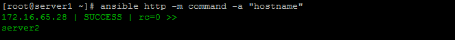
ansible <ansible.client> -m copy -a "src=</path/to/localfile> dest=</path/to/remotefile>"
//远程传文件
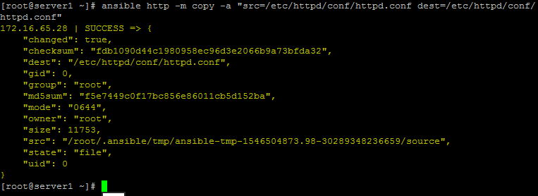
ansible <ansible.client> -m file -a "dest=</path/to/remotefile> mode=<chmod.mun> [owner=<username>] [group=<group>]"
//远程创建文件，可以设置文件的权限与用户名
//第一次生成文件要state=touch
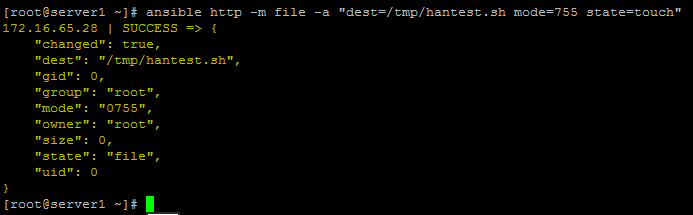
ansible <ansible.client> -m file -a "dest=</path/to/remotedir> mode=<chmod.num> state=directory"
//远程创建文件夹
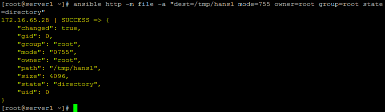
ansible <ansible.client> -m file -a "dest=</path/to/remotefile> state=absent"
//远程删除文件
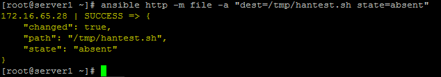
ansible <ansible.client> -m ping
//ping所有<ansible.client>的主机，查看ansible服务器和被控制主机的网络是否通。
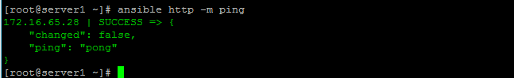
ansible <ansible.client> -m service -a "name=<service.name> state={started|restarted|stoped}"
//修改服务的状态
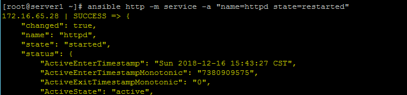
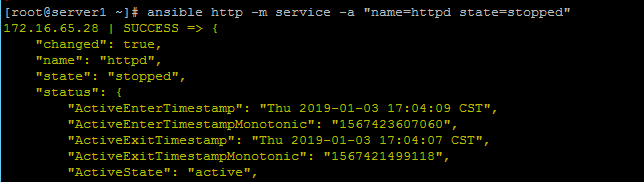
ansible <ansible.client> -m shell -a '<command>'
//向远程主机发送命令
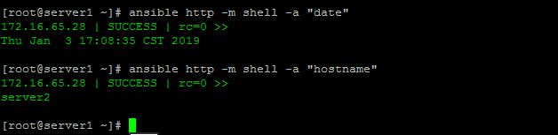
ansible <ansible.client> -m user -a "name=<username> [passwd=<crypted.passwd>]"
//添加一个用户
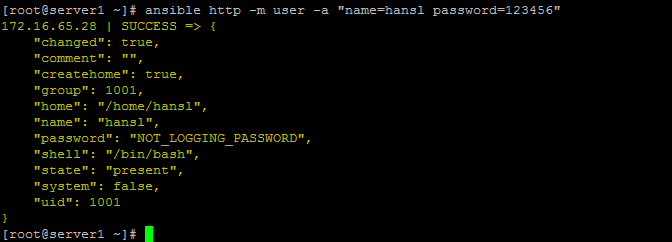
根据实际情况，密码这个项最好是先在一台主机上建一个密码，然后在/etc/shadow里提取。而且某些系统中密码是包含特殊字符$，所以密码要用单引号扩起来而$前要用\符号转译。
ansible <ansible.client> -m yum -a "name=<software.name> state=present"
//直接安装指定软件，如果已安装则查看版本信息。
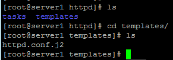